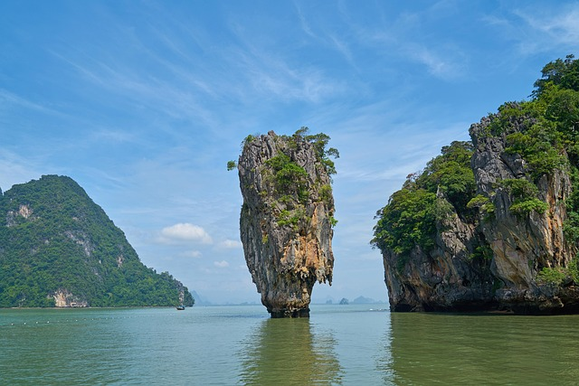

A szigetek a legfontosabb felszíni területek, mert végülis minden a felszínen egy nagy sziget.Most a szigetek nagy luxusnak számítanak mert általában a gazdagok rendelkeznek szigetekkel pl.(Diddy,Justin Bieber)

A szigetek már a Föld kialakulása (és lehülése) után már kialakúltak. legöbb szigettel rendelkező sziget az Svédország 267 570 szigettel rendelkezik.
| Sziget | ország | melyik óceánban van |
|---|---|---|
| Grönland | Dánia | Jeges-tenger és Atlanti-óceán határán |
| Új-Guinea | Pápua Új-Guinea | Csendes-óceán |
| Borneó (Kalimantan) | Indonézia | Csendes-óceán és Indiai-óceán |